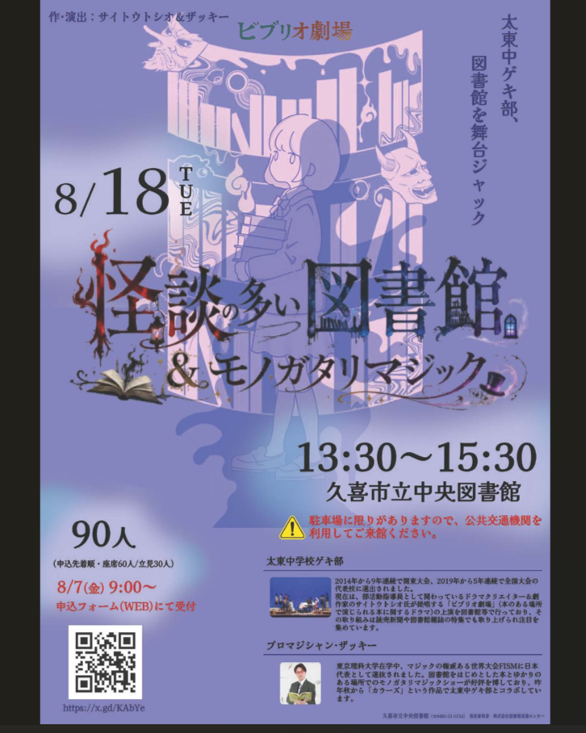

PROFILE
サイトウトシオ
中学生とともに、演じる人が輝く脚本と舞台を創作してきたドラマクリエイター。学校演劇の実践を経て、現在は図書館や書店など、本のある場所へと活動の場を広げています。
ビブリオ劇場の取組
「本のある場所が舞台になる」をコンセプトに、図書館や書店で、本に関する劇を上演する「ビブリオ劇場」を展開しています。演劇を通して、本のある場所とYA（ヤングアダルト）をつなぎ、本と人、人と物語、人と人が出会う場をつくる取組です。
メディア掲載
ビブリオ劇場の取組は、日本図書館協会『図書館雑誌』2026年2月号、および国立国会図書館『カレントアウェアネス-E』で紹介されました。
SCRIPTS
脚本
代表作から近年の作品まで。作品紹介・脚本ページへ進めます。
PERFORMANCE ARCHIVE
斉藤作品の上演の記録
「七つ森」で長く蓄積してきた大切な記録です。
上演校・上演団体の記録
記録を見る →
サイトウトシオ（斉藤俊雄）作品は、どこで、どのように上演されてきたのか。
斉藤作品を上演した、または今後上演する学校・団体の記録、全国大会・関東大会で上演された作品などをまとめています。脚本そのものと同じく、「七つ森」の中心となるアーカイブです。
RECENT PERFORMANCES
最近の劇
近年の上演を、実際のフライヤーとともに紹介します。

PROJECTS
脚本・上演から広がった活動
「七つ森」で記録してきた実践と、そこから独立して発展した活動。